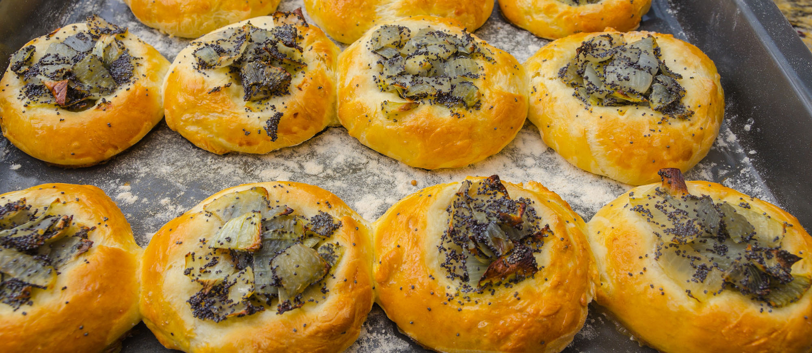

Cebularz lubelski is a round-shaped flatbread with a thickness of about 1,5 centimeters. It is produced in the Lublin Province in Poland, and only 24 bakeries make this unique product that should be eaten fresh, as it must be consumed within 48 hourss of being baked. The flatbread is topped with diced onions, salt, and poppy seeds, baked until it develops a golden color and an aroma characteristical of freshly fried onions.
Meal prep time : 3 hours
Servings : 4